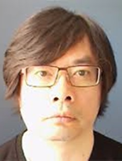

    <script type="text/javascript">
        document.write ('<body style="background: lightgray; background-attachment: fixed;">')
    </script>


<!-- Clients Aside -->
    

    <aside class="clients" class="bg-light-gray">
        <div class="container">
            <div class="row">
                <div class="col-lg-12 text-center">
                    <h2 class="section-heading">Invited Speakers and Talks</h2><br>
                    <table align="left" border="1" cellpadding="5" cellspacing="5" style="width: 100%;">
                        <tr style="border-bottom:1pt solid black;">
                        <td style="background-color: #e4e3e6; text-align: justify; padding:10px">
                            <p><span style="font-size:16.0pt;color:#4F2683;"><b>Talk #1: Point-of-Care-Ultrasound Guided Therapies and Interventions in the Global Health Context</b></span></p>
                        </td>
                        </tr>
                        <tr style="border-bottom:1pt solid black;">
                        <td style="text-align: justify; padding:10px">
                            
                            <p><strong>Speaker:</strong> Gabor Fichtinger, Queen's University</p>
                            <p><strong>Talk summary:</strong> Point-of-care-ultrasound guided therapies and interventions, shortly POCUS-IGT, enables treatment at the bedside, whether in an urban hospital, 
                            rural clinic, or mobile care unit; potential use of POCUS-IGT in interventions like injections, biopsies, drainages, ablations and surgeries is virtually unlimited.                                As such, POCUS-IGT can transcend geographic and socio-economic boundaries and thus bring closer the ideal of democratization of access to healthcare. 
                            In the global context, sustainable development of POCUS-IGT programs is dependent on the availability of free open-source software platforms, as the mean of rapid 
                            knowledge and technology translation. This talk will discuss the role of the 3D Slicer (www.slicer.org) and SlicerIGT (www.SlicerIGT.org) free open-source software ecosystems 
                            in the development of POCUS-IGT solutions and their global deployment though the Train the Trainer Program, an alliance between Queen’s University, University of Las Palmas de 
                            Gran Canaria, and Harvard Medical School, working with clinical leaders, governments, and international organization toward establishing national POCUS-IGT programs in West Africa, 
                            particularly in Mauritania and Senegal.</p>
                            <p><strong>Biography:</strong> Gabor Fichtinger (IEEE M’04, S’2012, F’2016) received his doctoral degree in computer science
                            from the Technical University of Budapest, Budapest, Hungary, in 1990. He is a Professor and
                            Canada Research Chair in Computer-Integrated Surgery at Queen’s University, Canada, where he
                            directs the Percutaneous Surgery Laboratory (a.k.a. Perk Lab). His research and teaching specialize
                            in computational imaging and robotic guidance for surgery and medical interventions, focusing on
                            the diagnosis and therapy of cancer and musculoskeletal conditions. He has contributed more than
                            700 publications, with over 14,000 citations. Prof. Fichtinger is an Associate Editor for IEEE
                            Transactions on Biomedical Engineering and Elsevier’s Medical Image Analysis, Deputy Editor for
                            the International Journal of Computer Assisted Surgery Radiology. He has served on the boards of
                            the International Society of Medical Image Computing and Computer Assisted Surgery (MICCAI)
                            and the International Society of Computer Assisted Surgery (ISCAS). Prof. Fichtinger received
                            many honours, including the Tier-1 Canada Research Chair, Cancer Care Ontario Research Chair,
                            IEEE Fellow, AIMBE Fellow, MICCAI Fellow, Marie Curie Fellow of the European Community,
                            Distinguished Speaker of ACM, IEEE EMBS Distinguished Lecturer.</p>
                        </td>
                        </tr>
                        <tr style="border-bottom:1pt solid black;">
                        <td style="background-color: #e4e3e6; text-align: justify; padding:10px">
                            <p><span style="font-size:16.0pt;color:#4F2683;"><b>Talk #2: Development of AI-enhanced point-of-care frugal ultrasound imaging</b></span></p>
                        </td>
                        </tr>    
                        <tr style="border-bottom:1pt solid black;">
                        <td style="text-align: justify; padding:10px">
                            
                            <p><strong>Speaker:</strong> Aaron Fenster</a>, Robarts Research Institute</p>
                        </td>
                        </tr>
                        <tr style="border-bottom:1pt solid black;">
                        <td style="background-color: #e4e3e6; text-align: justify; padding:10px">
                            <p><span style="font-size:16.0pt;color:#4F2683;"><b>Talk #3: The role of Augmented and Virtual reality in Frugal Imaging Technologies</b></span></p>
                        </td>
                        </tr>    
                        <tr style="border-bottom:1pt solid black;">
                        <td style="text-align: justify; padding:10px">
                            <p><strong>Speakers:</strong> Terry Peters & Elvis Chen, Robarts Research Institute</p>    
                            
                            
                        </td>
                        </tr>
                        <tr style="border-bottom:1pt solid black;">
                        <td style="background-color: #e4e3e6; text-align: justify; padding:10px">
                            <p><span style="font-size:16.0pt;color:#4F2683;"><b>Talk #4: Frugal technologies - Academics Without Borders</b></span></p>
                        </td>
                        </tr>    
                        <tr style="border-bottom:1pt solid black;">
                        <td style="text-align: justify; padding:10px">
                            
                            <p><strong>Speaker:</strong> Rahim Rezaie</a>, Academics Without Borders</p>
                        </td></tr>
                        <tr style="border-bottom:1pt solid black;">
                        <td style="background-color: #e4e3e6; text-align: justify; padding:10px">
                            <p><span style="font-size:16.0pt;color:#4F2683;"><b>Talk #5: A Framework for addressing Global Health challenges in Radiology</b></span></p>
                        </td>
                        </tr>    
                        <tr style="border-bottom:1pt solid black;">
                        <td style="text-align: justify; padding:10px">
                            <p>
                            <p><strong>Speaker:</strong> Udunna Anazodo</a>, Mcgill University</p>
                        </td></tr>
                       
                    </table>


                
                   
                    
               </div> </div>
            </div>
   </aside>
    